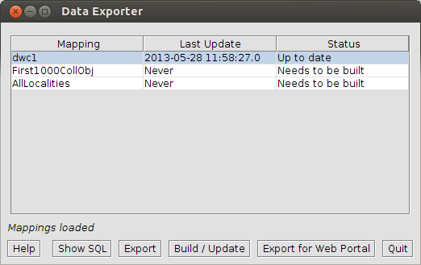

O aplicativo Exportador de dados é usado para construir, atualizar e exportar arquivos de dados para uso do IPT ou um portal web. O termo 'compilar' refere-se ao processo que o Specify usa para carregar dados no esqueleto, ou esquema, de um banco de dados. Antes que um arquivo de dados possa ser construído, um Mapeamento deve primeiro ser criado, usando o Editor de Mapeamento de conjuntos de dados dentro de Specify. Se você não criou um mapa, precisará fechar a ferramenta Exportador de dados, reabrir o Specify e criar o mapa usando a ferramenta Mapeamento de dados. Para a documentação explicando como criar um mapa, consulte Publicação na Web.
A ferramenta Exportador de Dados na verdade cria uma tabela, ou cache, no banco de dados contendo todos os dados relevantes, com base no mapa que foi criado dentro do Specify. Esta tabela e os dados são então indexados e exportados, juntamente com outros arquivos relevantes, para uso num portal da web. Ou, o cache é exportado como um arquivo de texto delimitado por tabulação para importação no IPT.
O aplicativo Exportador de Dados está localizado no diretório bin, dentro do diretório do Specify, que armazena os arquivos executáveis para o Specify. Clique duas vezes em Exportador de dados (ou selecione-o em Iniciar/Arquivos de Programas/Specify no Windows) para iniciar a ferramenta. Os usuários são obrigados a fazer login usando seu nome de usuário e senha especificados.
O Exportador de dados abre uma tabela de três colunas com o botão de ação.

Ferramenta Exportador de dados
Nota: O SQL está na estrutura do cache. Se o cache tiver de ser reconstruido e mapeamentos tiverem de ser alterados, a aformação em SQL não irá refletir as mudanças até que o cache seja atualizado.
Para caches que não precisam ser construídos, apenas as linhas desatualizadas são atualizadas. Isto é significativamente mais rápido do que uma compilação inicial, que pode levar muito tempo. As atualizações não são permitidas para mapeamentos que estão sendo editados ou atualizados por outro usuário; portanto, os usuários devem fechar todos os mapeamentos antes de atualizar.
Nota: Construir/atualizar o cache precisará o nome de usuário e senha do TI (MySQL).
Cancelamento de operação - Poderá cancelar uma atualização or exportação ao clicar no botão (fechar) para fechar a janela do aplicativo. Você terá que confirmar o cancelamento. Se cancelar, terá de começar de novo, a próxima ver que realizar a operação.
Note: Se cancelar uma atualização que precisa ser reconstruída, o cache pré existente será apagado.